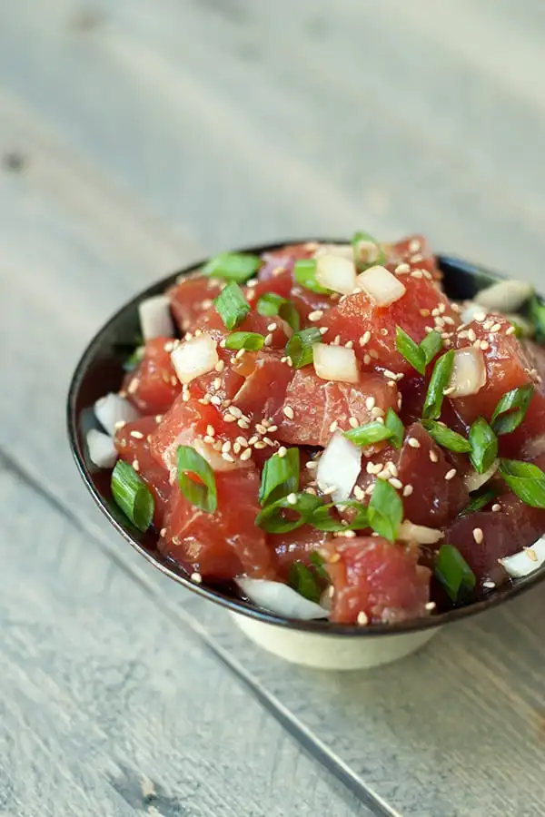

Poke Recipe

Ingredients
- Ahi Tuna
- Soy Sauce
- Sesame Oil
- Green Onions
- Toasted Sesame Seeds
- Macadamia Nuts
- Crushed Red Pepper (Optional)
Steps
-
Place tuna in a medium non-reactive bowl. Add soy sauce, green
onions, sesame oil, sesame seeds, macadamia nuts, and red pepper
flakes.
- Mix well.
- Cover and refrigerate at least 2 hours before serving.